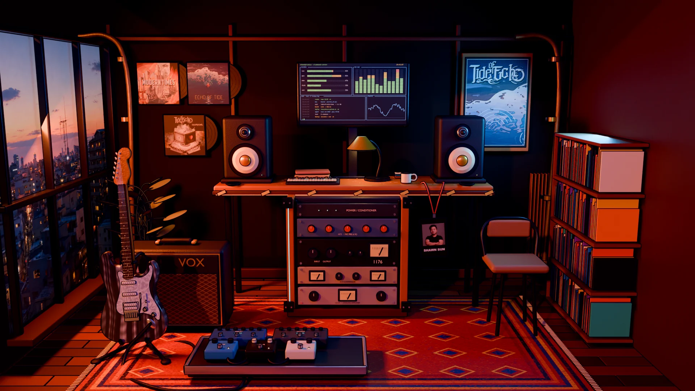

Shawn’s Studio

TUNING IN
↔
Drag to look around
·
Click to explore
FOLLOW THE SOUND
Say hello
00 ↗
Tide of Echo
01 ↗
The records
02 ↗
The Suhr
03 ↗
The signal chain
04 ↗
The Vox
05 ↗
The pedalboard
06 ↗
Command center
07 ↗
The room is taking a moment to tune in.
Try again
Meet Tide of Echo
Enable JavaScript to look around.
Find Tide of Echo ↗
×